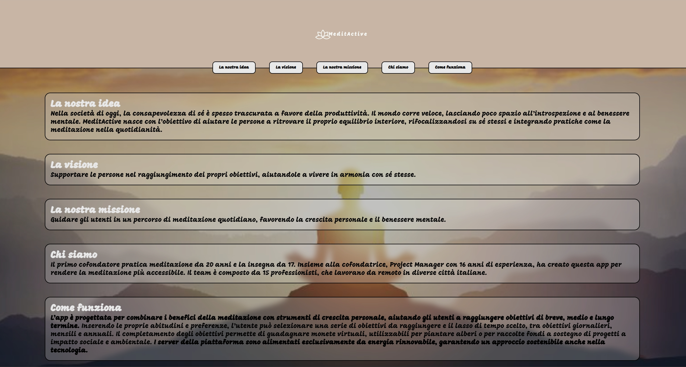
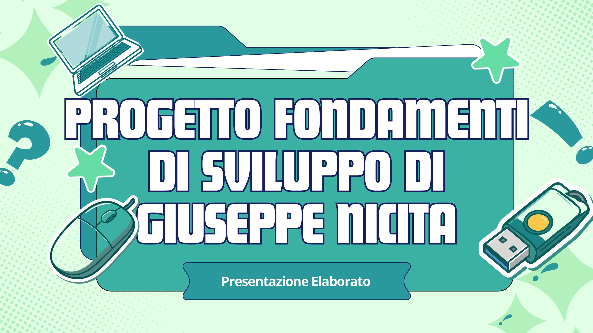

Mi chiamo Giuseppe, web developer in formazione con una solida esperienza pregressa nel settore logistico.
Attualmente frequento il Master Full Stack Developer & AI Agents di Start2Impact, un percorso che mi sta fornendo le basi tecniche — a partire da HTML e CSS — per costruire un profilo professionale completo nel mondo dello sviluppo web.
La mia esperienza precedente mi ha formato sul piano dell'organizzazione, della precisione e della gestione delle priorità: competenze trasversali che applico con la stessa attenzione anche allo sviluppo software.
Questa landing page rappresenta il punto di partenza di un percorso ancora in divenire.
Prima landing page personale, progettata per presentare un'app di meditazione e benessere mentale.
Il design riflette i valori del prodotto: palette calda e naturale, tipografia morbida e atmosfera visiva rilassante.
La struttura è organizzata in sezioni tematiche con navigazione rapida, pensata per guidare l'utente attraverso idea, visione, missione e funzionalità del progetto in modo chiaro e fluido.

Elaborato incentrato sulla progettazione logica di un algoritmo di valutazione candidature.
Il lavoro include un diagramma di flusso strutturato, una tavola della verità basata su logica AND con valutazione a corto circuito, pseudocodice modulare con schema a uscita anticipata (early return), casi di test documentati e riflessioni sulla qualità del codice in termini di chiarezza, organizzazione e riusabilità.
La presentazione è stata realizzata con un design visivo coerente e riconoscibile, utilizzando una palette verde/teal con elementi grafici illustrativi.
